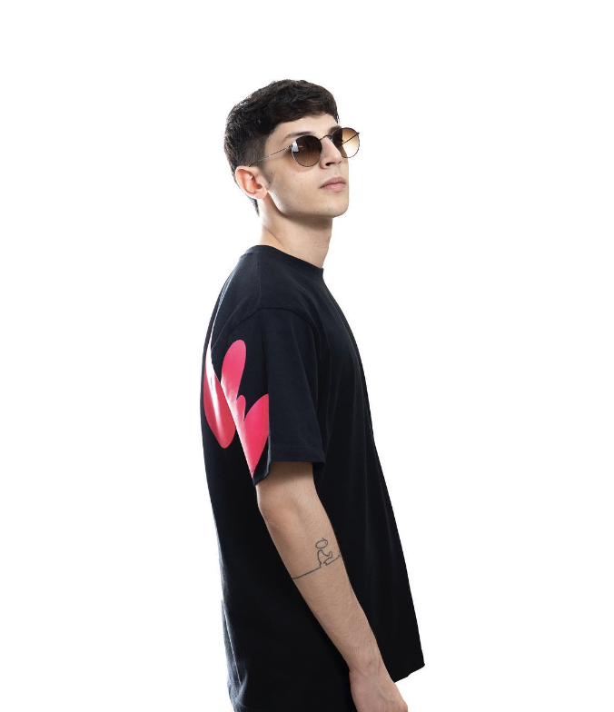

Salve a tutti, io sono Andrea Ciraldo. Ho 24 anni e vivo a Bronte, un piccolo paese in provincia di Catania. Sono uno studente della facoltà di ingegneria Informatica presso l'Università di Catania.
Essendo un amante di musica i miei hobby girano attorno ad essa. Suono il pianoforte da quando ho 10 anni e da circa 8 anni sono un Disc Jockey rendendo quest'hobby una vera e propria professione.
Sono un ragazzo molto carismatico, socievole e determinato.